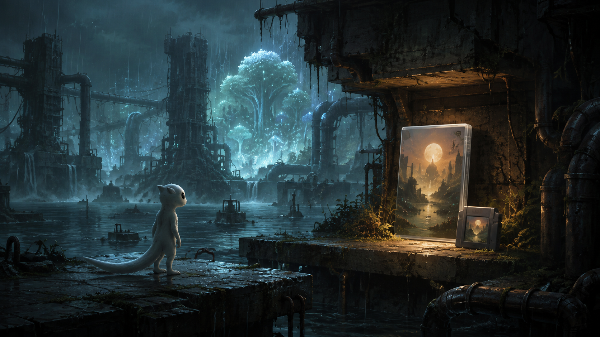

Rain World Anthology Arrives February 18
Rain World Anthology will put the base game and both expansions on physical PS5 and Switch 2 media, with pre-orders targeting February 18, 2027.

What happened
Akupara Games and Rain World's official Steam channel announced Rain World Anthology during the publisher's tenth-anniversary showcase on September 6, 2026. Serenity Forge's official store pages say the physical package is planned for PlayStation 5 and Nintendo Switch 2, with pre-orders expected to ship on February 18, 2027.
The $59.99 Premium Edition includes the base game, the Downpour and The Watcher expansions, an illustrated inner coversheet, an embossed slipcover, holographic stickers and a soundtrack download card. The $119.99 Collector's Edition adds a full-size Slugcat scarf, an art book, an acrylic standee and an acrylic keychain. Those are U.S. list prices; taxes, shipping and import charges can change the final cost.
Why it matters
This is more than a merchandise bundle because Serenity Forge describes the physical copy as including the game and both major expansions on a PS5 disc or a Switch 2 Edition cartridge. That gives collectors and preservation-minded players a single, complete console package rather than a base release that still depends on separate expansion purchases.
Gematsu independently confirmed the platforms, contents, prices and February 18 date after the showcase. The official pages do not currently describe frame-rate, resolution or other Switch 2-specific performance changes, so a physical Switch 2 Edition cartridge should not yet be treated as proof of a technical upgrade.
The Arcade World take
The Premium Edition is the practical version: it carries the complete playable package and the core physical extras at half the price of the Collector's Edition. The $60 difference buys memorabilia, not additional game content, which makes the cheaper edition the clearer choice for players primarily interested in access and preservation.
Physical media improves the ownership story, but it does not answer every preservation question. Buyers should still watch for confirmation of patch requirements, the version stored on the disc or cartridge, regional availability and whether every expansion is fully playable without a download. None of those details is stated on the current product pages.
What happens next
Pre-orders are being handled through Serenity Forge, with availability and international costs varying by region. Before paying, check the store's shipping and return terms and compare the landed price with local retailers that may list the anthology later.
The next useful update will be technical confirmation: what build ships on each physical format, whether a download is required, and what the dedicated Switch 2 release improves over the existing Switch version. Until the publishers answer those questions, the confirmed news is the package, platforms, contents, prices and target ship date—not a performance upgrade.
Sources and further reading
Keep exploring
Open the Game Room or visit the latest stories.